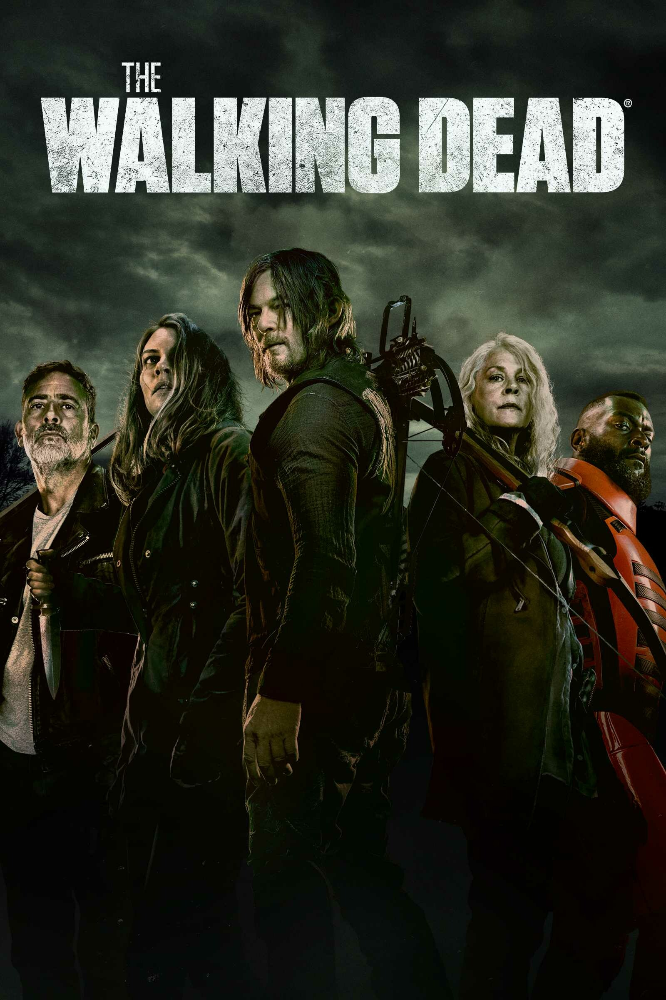

The Walinking Dead

Descrição:
Baseado na história em quadrinhos escrita por Robert Kirkman, este drama potente e visceral retrata a vida nos Estados Unidos pós-apocalíptico. Um grupo de sobreviventes, liderado pelo policial Rick Grimes, segue viajando em busca de uma nova moradia segura e distante dos mortos-vivos. A pressão para permanecerem vivos e lutarem pela sobrevivência faz com que muitos do grupo sejam submetidos às mais profundas formas de crueldade humana. Rick acaba descobrindo que o tão assustador desespero pela subsistência pode ser ainda mais fatal do que os próprios mortos-vivos que os rodeiam.